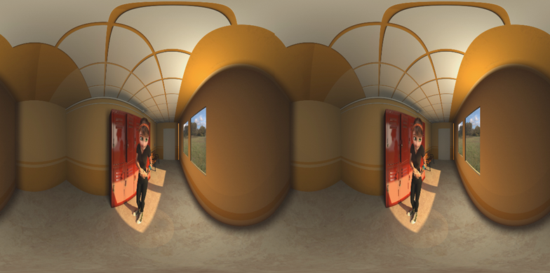
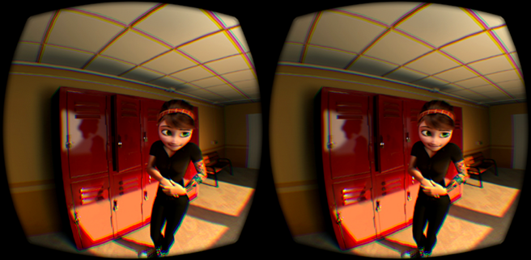

使用 OculusCamera 创建视频后，您应该会得到类似下图的视频：

为了能够得到可在球形投影上使用的图像，您需要设定以下设置：
但是，要获得身临其境的感觉，您必须使用 Oculus Rift 头戴式设备观看视频。
目前有一些程序可以做到这一点。本例中使用了 MaxVR，但是任何支持立体视觉和球形摄影机重现的 Oculus Rift 视频播放器应该都没问题。
在您选择的程序中，打开视频，选择球形投影和正确的立体视觉设置，然后即可在渲染的场景内部向任意方向观看。
效果如下：

感谢 Mery Project 提供本教程中使用的场景。